Chapter 7 Working with Axes
7.0.0.0.1 Increase Space between Axis and Axis Titles
theme() is an essential command to modify particular theme elements (texts and titles, boxes, symbols, backgrounds, …). We are going to use them a lot! For now, we are going to modify text elements. We can change the properties of all or particular text elements (here axis titles) by overwriting the default element_text() within the theme() call:
ggplot(bikes, aes(x = date, y = count)) +
geom_point(color = "firebrick") +
labs(x = "Date of the year",
y = "Counts of bikes shared per time period") +
theme(axis.title.x = element_text(vjust = 0, size = 15),
axis.title.y = element_text(vjust = 2, size = 15))
vjust refers to the vertical alignment, which usually ranges between 0 and 1 but you can also specify values outside that range. Note that even though we move the axis title on the y axis horizontally, we need to specify vjust (which is correct form the label’s perspective). You can also change the distance by specifying the margin of both text elements:
ggplot(bikes, aes(x = date, y = count)) +
geom_point(color = "firebrick") +
labs(x = "Date of the year",
y = "Counts of bikes shared per time period") +
theme(axis.title.x = element_text(margin = margin(t = 10), size = 15),
axis.title.y = element_text(margin = margin(r = 10), size = 15))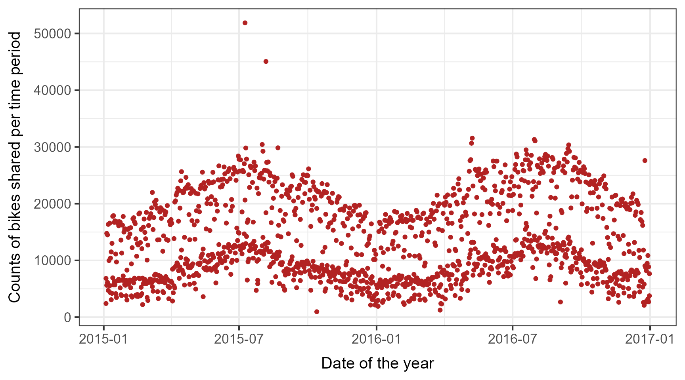
The labels t and r within the margin() object refer to top and right, respectively. You can also specify the four margins as margin(t, r, b, l). Note that we now have to change the right margin to modify the space on the y axis, not the bottom margin.
💡 A good way to remember the order of the margin sides is “t-r-ou-b-l-e”.
7.0.0.0.2 Change Aesthetics of Axis Titles
Again, we use the theme() function and modify the element axis.title and/or the subordinated elements axis.title.x and axis.title.y. Within the element_text() we can for example overwrite the defaults for size, color, and face:
ggplot(bikes, aes(x = date, y = count)) +
geom_point(color = "firebrick") +
labs(x = "Date of the year",
y = "Counts of bikes shared per time period") +
theme(axis.title = element_text(size = 15, color = "firebrick",
face = "italic"))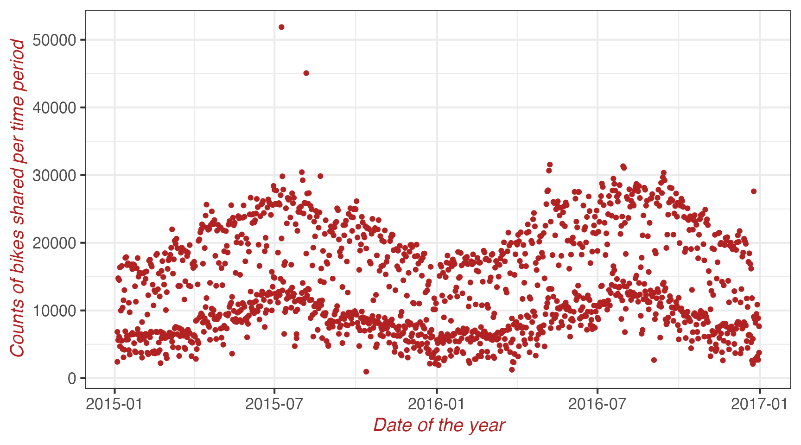
The face argument can be used to make the font bold or italic or even bold.italic.
ggplot(bikes, aes(x = date, y = count)) +
geom_point(color = "firebrick") +
labs(x = "Date of the year",
y = "Counts of bikes shared per time period") +
theme(axis.title.x = element_text(color = "sienna", size = 15),
axis.title.y = element_text(color = "orangered", size = 15))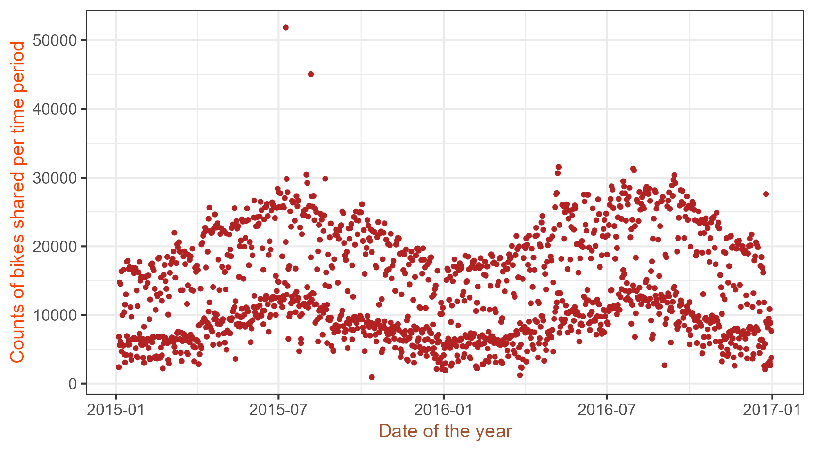
💁 You could also use a combination of axis.title and axis.title.y, since axis.title.x inherits the values from axis.title. Expand to see example.
ggplot(bikes, aes(x = date, y = count)) +
geom_point(color = "firebrick") +
labs(x = "Date of the year",
y = "Counts of bikes shared per time period") +
theme(axis.title = element_text(color = "sienna", size = 15),
axis.title.y = element_text(color = "orangered", size = 15))
One can modify some properties for both axis titles and other only for one or properties for each on its own:
ggplot(bikes, aes(x = date, y = count)) +
geom_point(color = "firebrick") +
labs(x = "Date of the year",
y = "Counts of bikes shared per time period") +
theme(axis.title = element_text(color = "sienna", size = 15, face = "bold"),
axis.title.y = element_text(face = "bold.italic"))
7.0.0.0.3 Change Aesthetics of Axis Text
Similarly, you can also change the appearance of the axis text (here the numbers) by using axis.text and/or the subordinated elements axis.text.x and axis.text.y:
ggplot(bikes, aes(x = date, y = count)) +
geom_point(color = "firebrick") +
labs(x = "Date of the year",
y = "Counts of bikes shared per time period") +
theme(axis.text = element_text(color = "dodgerblue", size = 12),
axis.text.x = element_text(face = "italic"))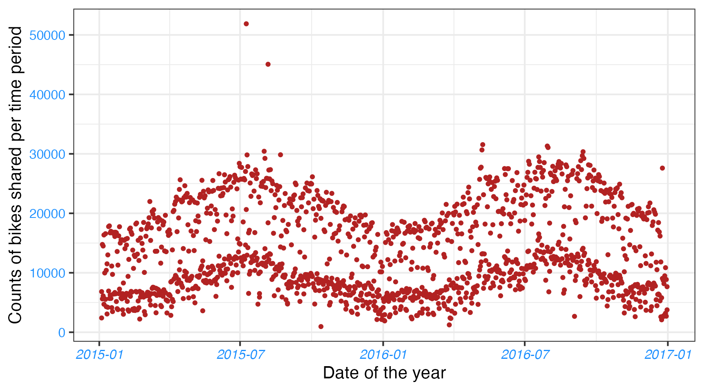
7.0.0.0.4 Rotate Axis Text
Specifying an angle allows you to rotate any text elements. With hjust and vjust you can adjust the position of the text afterwards horizontally (0 = left, 1 = right) and vertically (0 = top, 1 = bottom):
ggplot(bikes, aes(x = date, y = count)) +
geom_point(color = "firebrick") +
labs(x = "Date of the year",
y = "Counts of bikes shared per time period") +
theme(axis.text.x = element_text(angle = 50, vjust = 1, hjust = 1, size = 12))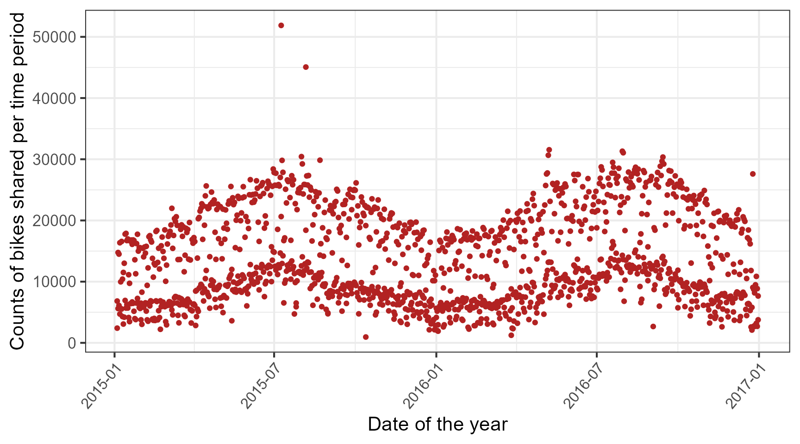
7.0.0.0.5 Remove Axis Text & Ticks
There may be rarely a reason to do so—but this is how it works:
ggplot(bikes, aes(x = date, y = count)) +
geom_point(color = "firebrick") +
labs(x = "Date of the year",
y = "Counts of bikes shared per time period") +
theme(axis.ticks.y = element_blank(),
axis.text.y = element_blank())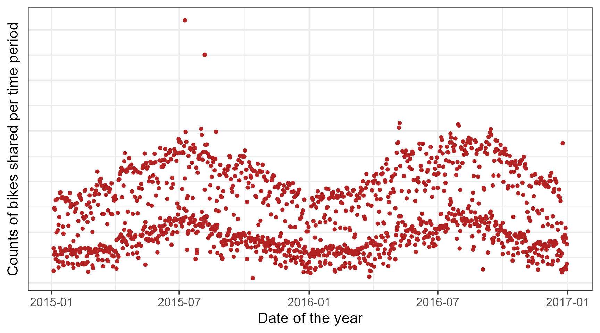
I introduced three theme elements—text, lines, and rectangles—but actually there is one more: element_blank() which removes the element (and thus is not considered an official element).
💡 If you want to get rid of a theme element, the element is always element_blank().
7.0.0.0.6 Remove Axis Titles
We could again use theme_blank() but it is way simpler to just remove the label in the labs() (or xlab()) call:
ggplot(bikes, aes(x = date, y = count)) +
geom_point(color = "firebrick") +
labs(x = NULL, y = "")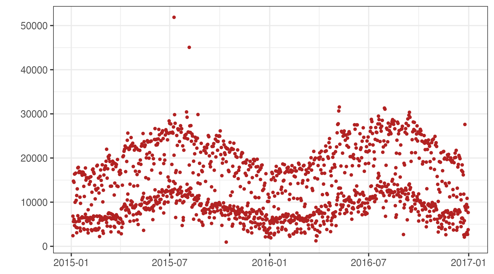
💡 Note that NULL removes the element (similarly to element_blank()) while empty quotes "" will keep the spacing for the axis title and simply print nothing.
7.0.0.0.7 Limit Axis Range
Sometimes you want to zoom into take a closer look at some range of your data. You can do this without subsetting your data:
ggplot(bikes, aes(x = date, y = count)) +
geom_point(color = "firebrick") +
labs(x = "Date of the year",
y = "Counts of bikes shared per time period") +
ylim(c(0, 50))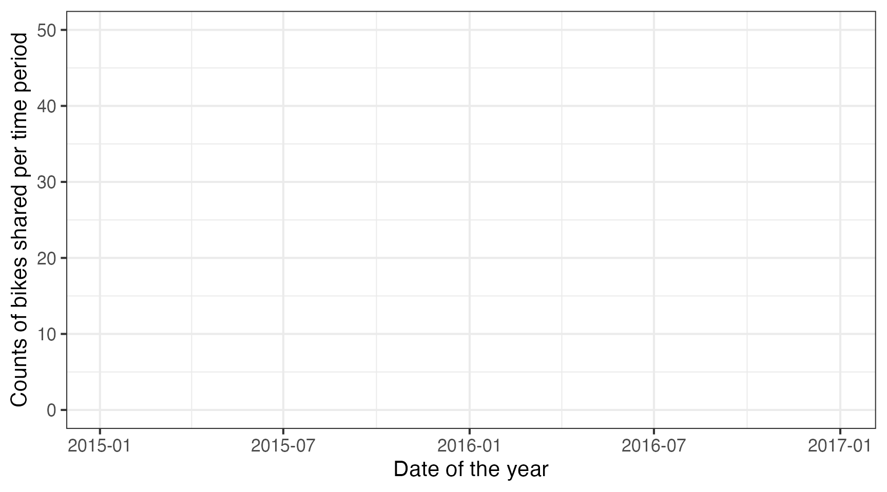
Alternatively you can use scale_y_continuous(limits = c(0, 50)) or coord_cartesian(ylim = c(0, 50)). The former removes all data points outside the range while the second adjusts the visible area and is similar to ylim(c(0, 50)). You may wonder: So in the end both result in the same. But not really, there is an important difference—compare the two following plots:
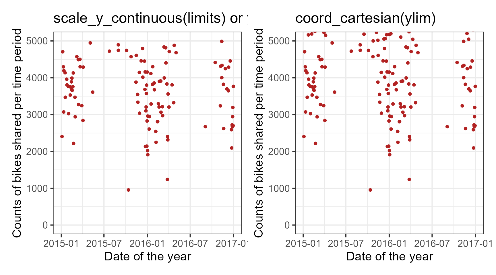
You might have spotted that on the left there is some empty buffer around your y limits while on the right points are plotted right up to the border and even beyond. This perfectly illustrates the subsetting (left) versus the zooming (right). To show why this is important let’s have a look at a different chart type, a box plot:
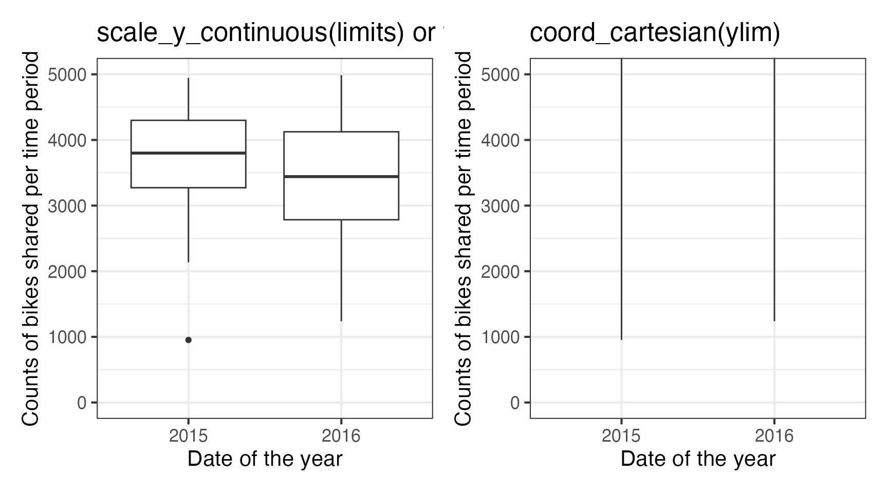
Um. Because scale_x|y_continuous() subsets the data first, we get completely different (and wrong, at least if in the case this was not your aim) estimates for the box plots! I hope you don’t have to go back to your old scripts now and check if you maybe have manipulated your data while plotting and did report wrong summary stats in your report, paper or thesis…
7.0.0.0.8 Force Plot to Start at Origin
Related to that, you can force R to plot the graph starting at the origin:
library(tidyverse)
ggplot(bikes, aes(x = wind_speed, y = count)) +
geom_point(color = "darkcyan") +
labs(x = "Wind speed",
y = "Counts of bikes shared per time period") +
expand_limits(x = 0, y = 0)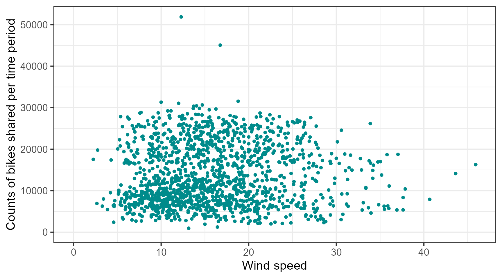
💁 Using coord_cartesian(xlim = c(0, NA), ylim = c(0, NA)) will lead to the same result. Expand to see example.
library(tidyverse)
ggplot(bikes, aes(x = wind_speed, y = count)) +
geom_point(color = "darkcyan") +
labs(x = "Wind speed",
y = "Counts of bikes shared per time period") +
coord_cartesian(xlim = c(0, NA), ylim = c(0, NA))But we can also force it to literally start at the origin!
ggplot(bikes, aes(x = wind_speed, y = count)) +
geom_point(color = "darkcyan") +
labs(x = "Wind speed",
y = "Counts of bikes shared per time period") +
expand_limits(x = 0, y = 0) +
coord_cartesian(expand = FALSE, clip = "off")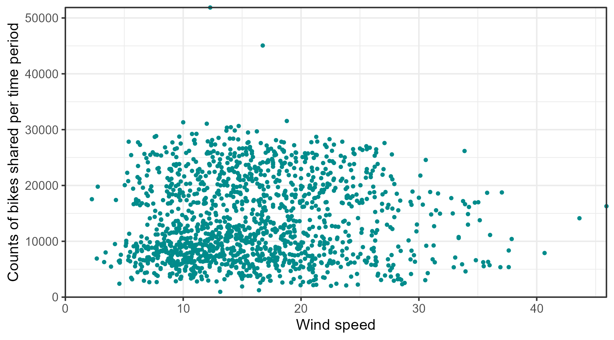
💡 The argument clip = "off" in any coordinate system, always starting with coord_*, allows to draw outside of the panel area.
Here, I call it to make sure that the tick marks at c(0, 0) are not cut. See the Twitter thread by Claus Wilke for more details.
7.0.0.0.9 Axes with Same Scaling
For demonstrating purposes, let’s plot temperature against temperature with some random noise. The coord_equal() is a coordinate system with a specified ratio representing the number of units on the y-axis equivalent to one unit on the x-axis. The default, ratio = 1, ensures that one unit on the x-axis is the same length as one unit on the y-axis:
ggplot(bikes, aes(x = temp, y = temp_feel)) +
geom_point(color = "sienna") +
labs(x = "Air temperature (°F)", y = "Feeled temperature (°F)") +
coord_fixed()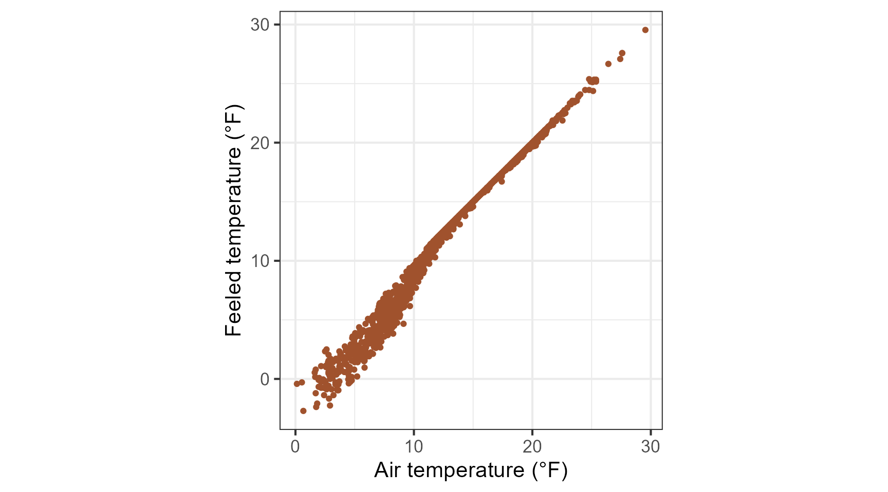
Ratios higher than one make units on the y axis longer than units on the x-axis, and vice versa:
ggplot(bikes, aes(x = temp, y = temp_feel)) +
geom_point(color = "sienna") +
labs(x = "Air temperature (°F)", y = "Feeled temperature (°F)") +
coord_fixed(ratio = 1/5)
7.0.0.0.10 Use a Function to Alter Labels
Sometimes it is handy to alter your labels a little, perhaps adding units or percent signs without adding them to your data. You can use a function in this case:
ggplot(bikes, aes(x = date, y = temp)) +
geom_point() +
labs(x = "Date of the year", y = NULL) +
scale_y_continuous(label = function(x) {return(paste(x, "Degrees Celsius"))})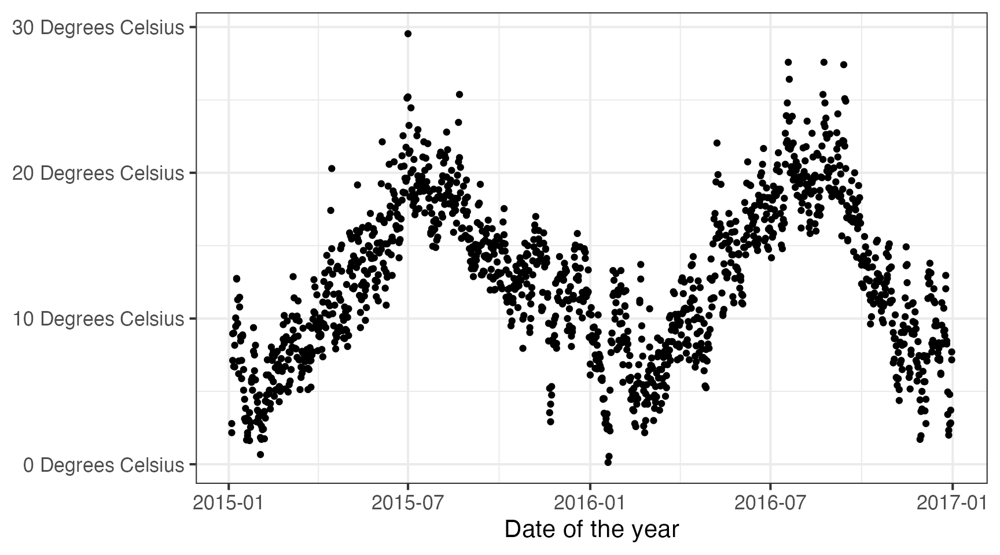
- work with scale_*_date()